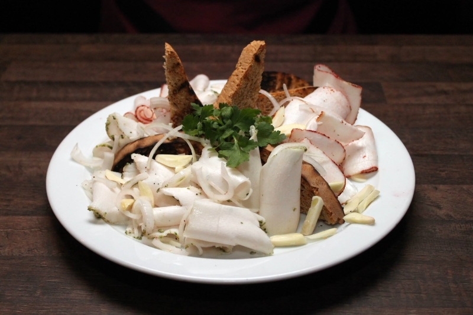
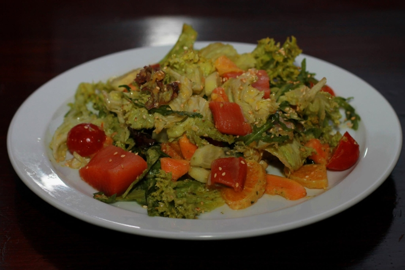
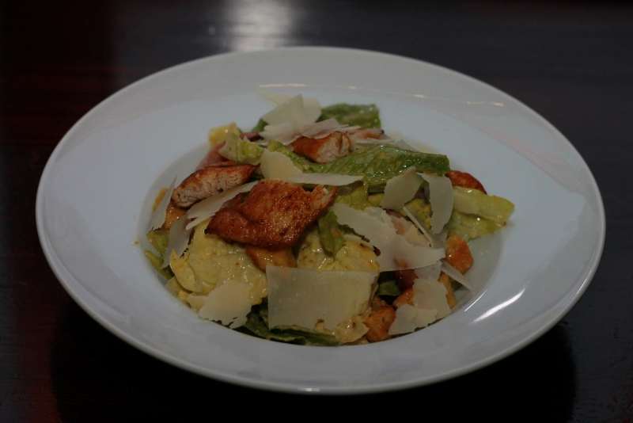
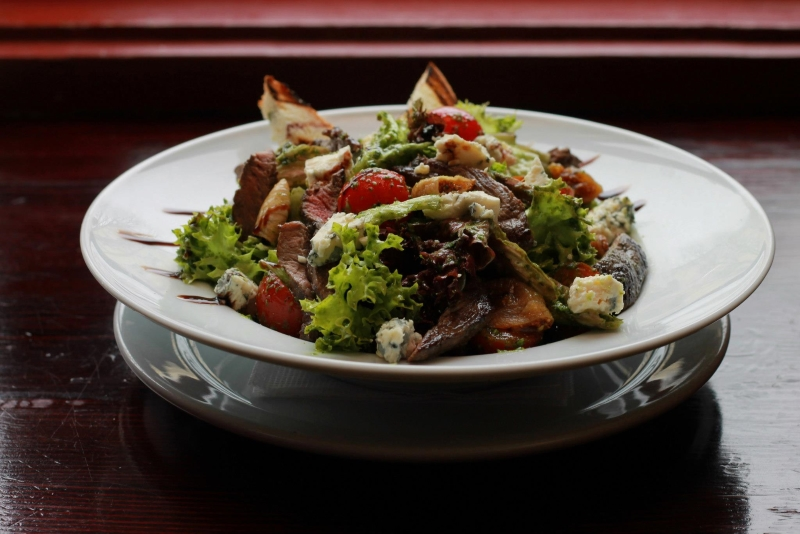
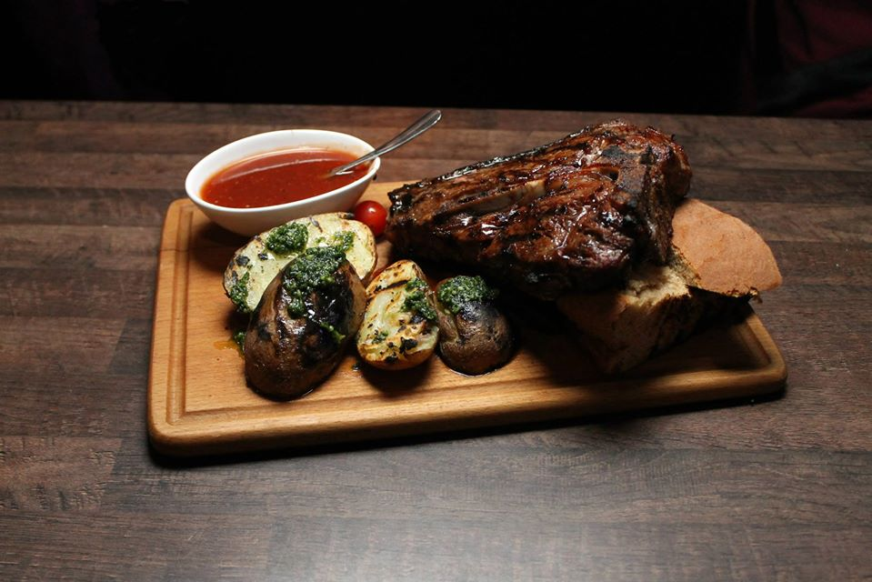

Кухня
Закуски
Appetizers
| Тареля від ДІДО «Dido» – platter of cured organic pork |
 |
650 |
| Печінковий паштет з грінками Liver pate with toasted bread |
 |
500 |
| Сало з часником і цибулею Salo |
 | 500 |
| Сирна тареля Cheese platter |
 |
900 |
| Тареля м’ясна Platter of sausages |
 |
950 |
Салати
Salads
| Салат з гравлаксом Salmon salad |
 | 650 |
| Салат Цезар Caesar salad |
 | 600 |
| Салат м’ясний Rapa whelk salad |
 | 650 |
| Салат з рапаном Pear salad |
 |
650 |
Основні страви
Main dishes
| Філе форелі запечене Baked trout fillet |
 |
1100 |
| Куряче філе з прошуто під кола соусом Grilled salmon |
 |
1550 |
| Гуска з грушею, апельсином та вишневим соусом Chicken prosciutto with cola sauce |
 |
1250 |
| Стейк свинний з полента Pork chop with polenta |
 |
950 |
| Ті-Боун T-Bone |
 | 2200 |